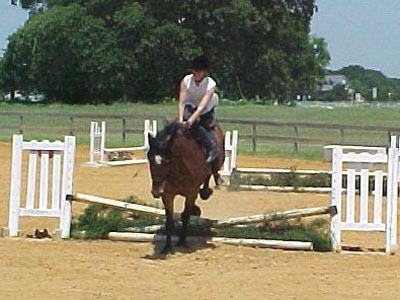
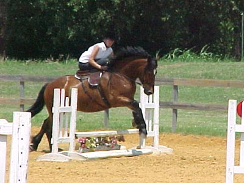

Combined Test on
Thuy - Sidesaddle Well, Thuy was having a
bad day. His dressage warm up was chargy,
to say the least, and his
Training 1 test was horrid.
He decided to be worried
about Bob, his trailer-mate, and seemed
to use that excuse to shy
at things and ignore me.
He's been to these show
grounds many times before, but today we had canter departs that were close
to bolts,
and leaps across the arena
at every gait but the walk. At least the judge complimented my riding by
putting
down 'Good Control!'
I figure yesterday's ride
was a good precursor to Fox Hunting. We had sudden leaps to the left and
right,
and being sidesaddle made
no difference to how I controlled him and made him at least simulate the
dressage pattern. During
one canter/gallop circle, I was able to think 'drop him, pick him back
up, and
get that trot before we
hit b'. It wasn't pretty, but we did get a round of applause when I saluted.
I decided to scratch our
BN CT entry, but I schooled the Intro jumps in warm up, and decided to
do a non-judged
round over the Intro course.
Thuy was absolutely perfect, no refusals, he trotted the fences I asked
him to, and cantered
those that I wanted to.
He didn't even pull toward Bob. I guess he thought two dressage shows in
a week was just too much.
One person said he went
into the dressage ring like he was looking for the hounds...
I went with the small jumps to help
my confidence.

It looks even more awkward from the
ground than it feels in the saddle.

I know, give more with my hands. Still,
my position seems to be improving.
I know we could have just trotted
these, but it helps to know that I've done a course now. No matter how
small the jumps...